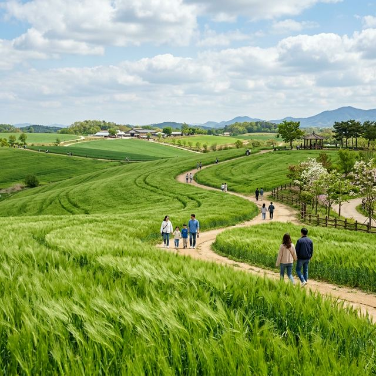
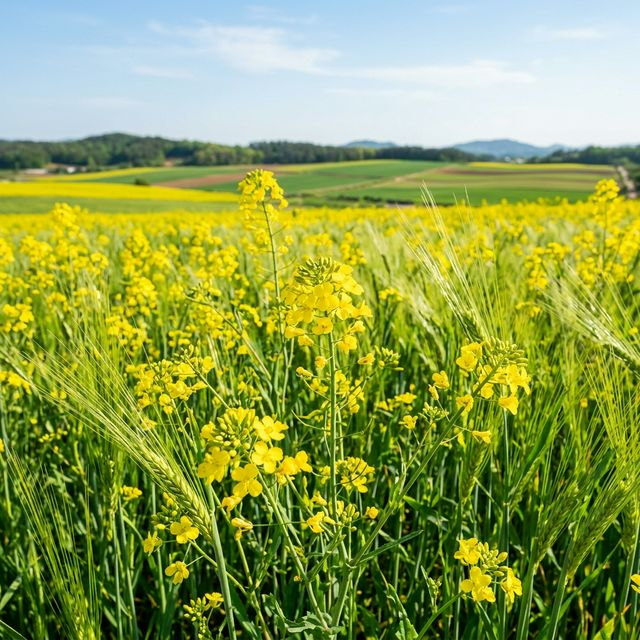
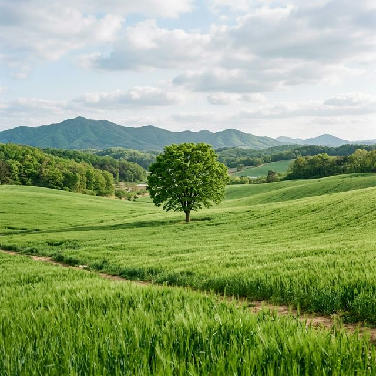

[주요 포인트]
따스한 5월, 끝없이 펼쳐진 초록빛 융단 위를 걷고 싶다면 경기도 안성 팜랜드가 정답입니다. 눈이 시리도록 푸른 호밀밭 물결과 화사한 노란빛 유채꽃이 빚어내는 환상적인 보색의 세계. 그림 같은 풍경
속에서 완벽한 인생 사진을 건지는 촬영 꿀팁과 더불어 아이와 함께 방문하기 좋은 목장 체험 코스까지 알차게 정리해 드립니다.
1. 5월의 안성 팜랜드: 두 가지 봄꽃의 완벽한 앙상블
수도권 최대 규모의 체험 牧場(목장)인 안성 팜랜드는 매년 5월 중순이 되면 거대한 도화지로 변신합니다. 바로 약 30만 평에 이르는 광활한 부지 중 상당 부분을 차지하는 초록빛 호밀밭과 노란
유채꽃밭 덕분입니다. 제주도나 남부 지방에서 볼 법한 엄청난 스케일의 꽃송이들이 수도권 한복판에 펼쳐지며 매일 수많은 방문객을 맞이합니다.
안성 팜랜드의 호밀밭은 단순히
면적만 넓은 것이 아닙니다. 시야에 걸리는 전봇대나 고층 건물이 전혀 없는, 오직 능선과 하늘만이 맞닿은 탁 트인 구릉 지대라는 점이 최대 장점입니다. 이러한 완만한 곡선 덕분에 어느 곳에서 셔터를 누르더라도
이국적이고 동화 같은 사진을 얻어갈 수 있습니다.
올해는 기상 조건이 매우 좋아, 호밀이 유난히 키가 크고 빽빽하게 자랐습니다. 바람이 불 때마다 호밀이 파도처럼 출렁이는 일명 '초록 파도'는
이곳에서만 감상할 수 있는 시각적 백미입니다. 일상에 지친 눈을 정화하기에 더할 나위 없는 최적의 여행지입니다.
2. 호밀밭 & 유채꽃밭: 인생샷 촬영 명당 및 시간대
팜랜드 내에는 수많은 포토존이 있지만, 프로 진사(사진작가)들은 해 뜨는 직후나 오후 4시 이후의 '매직 아워'를 가장 선호합니다. 특히 오후의 붉은빛이 호밀밭 위로 비스듬히
떨어질 때, 초록색 잎이 황금빛으로 물드는 듯한 드라마틱한 사진을 연출할 수 있습니다. 쨍한 정오에는 색감이 완전히 날아갈 수 있으므로 가급적 이른 아침 방문을 권장합니다.
넓은 호밀밭 한가운데
서 있는 '나 홀로 나무'와 파란 지붕의 이국적인 집은 가장 인기 있는 배경입니다. 망원 렌즈를 활용하여 피사체와 배경을 압축하면 더욱 비현실적인 그림이 완성됩니다. 인파를 피하고 싶다면 입구에서 가장 먼
산책로 끝자락부터 역방향으로 내려오며 촬영하는 '역주행 코스' 전법을 쓰는 것도 꿀팁입니다.
노란 유채꽃밭과 초록 호밀밭의 경계선도 강력히 추천하는 구도입니다. 보색 대비가 시선을 사로잡아
화사하고 생기 넘치는 분위기를 만들어 내기 때문입니다. 밝은 파스텔 톤의 원피스나 밀짚모자를 소품으로 챙겨가면 화보 촬영 부럽지 않은 성과를 낼 수 있습니다.

파란 봄 하늘 아래, 탁 트인 안성 팜랜드의 광활한 초록 호밀밭 / AI 제작 이미지
3. 아이와 함께하는 안성 팜랜드 목장 체험 가이드
안성 팜랜드는 아름다운 꽃밭으로 유명하지만, 그 본질은 농축산 체험 목장입니다. 따라서 화훼 관광 외에도 아이들의 오감을 일깨워줄 다채로운 동물 교감 프로그램이 가득합니다. 양,
소, 말, 토끼 등 다양한 가축들에게 직접 먹이를 주고 만져볼 수 있는 가축 체험장이 팜랜드 중간에 널찍하게 마련되어 있습니다.
가장 인기 있는 프로그램은 정해진 시간에만 시작되는 '양 떼 몰이'
공연입니다. 똑똑한 양치기 개들이 뭉실뭉실한 양 떼를 한 방향으로 능숙하게 모는 모습은 어른이 보아도 신기할 지경입니다. 공연 시간을 놓치지 않도록 입구에서 배포하는 일일 가이드맵을 미리 확인하는 것이
필수적입니다.
추가 요금을 지불하면 어린이를 위한 승마 체험이나 트랙터 마차 탑승도 가능합니다. 넓은 팜랜드를 걸어 다니기 지칠 무렵 귀여운 모양의 전동 자전거나 마차를 대여하면, 바람을 가르며
편안하게 풍경을 감상할 수 있어 가족 단위 관람객에게 인기가 높습니다.
4. 팜랜드 내 이색 체험 코스: 익사이팅 존
정적인 호밀밭 산책과 힐링에 그치지 않고, 팜랜드 한쪽에는 가벼운 액티비티를 즐길 수 있는 익사이팅 공간이 있습니다. 시원한 바람을 가르며 미니 레이싱을 즐기는 어린이 범퍼카와 작은 놀이기구들이 모여 있는
테마파크 구역입니다.
특히 어린아이들의 키 높이에 맞춘 미니 바이킹, 회전목마, UFO 등은 에버랜드 같은 대형 테마파크에 가지 않고도 알찬 즐거움을 선사합니다. 부모님들이 그늘 텐트존이나
벤치에서 휴식을 취하는 동안, 아이들은 안전하게 놀이기구를 탑승하며 체력을 발산할 수 있는 환상적인 공간이죠.
주말의 기나긴 대기 줄이 부담스러우시다면 아예 팜랜드 개장 시간에 맞춰 입장하자마자
익사이팅 고가부터 선점하는 것도 방법입니다. 동물 먹이 주기와 꽃밭 감상은 놀이기구를 충분히 즐긴 이후 오후 시간대에 느긋하게 둘러보시면 만족도가 훨씬 높습니다.

유채꽃의 샛노란 빛깔과 호밀밭의 초록빛이 조화롭게 만난 찬란한 들판 / AI 제작 이미지
5. 입장료 할인 및 스마트 매표 팁
안성 팜랜드의 입장료는 대인 기준 다소 부담될 수 있지만, 다양한 할인 제도를 현명하게 활용하면 매우 저렴하게 입장할 수 있습니다. 가장 기본은 네이버 예약이나 소셜 커머스를
통한 1일 전 온라인 사전 예매입니다. 당일 구매는 할인이 적용되지 않으므로 반드시 출발 전날 밤 매표를 완료해야 합니다.
안성, 평택 지역 주민이라면 신분증 지참 시 연중 파격적인 할인을 받을
수 있으며, 36개월 미만 유아는 증빙서류(가족관계증명서 등) 지참 조건으로 무료입장이 가능합니다. 더불어 오후 4시 이후에 입장하는 관람객을 위한 '선셋 할인' 제도를 활용하면 아름다운 노을을 반값에
감상하는 횡재를 누립니다.
매표소 대기열을 피하기 위한 또 하나의 전략으로, 무인 키오스크를 십분 활용하시기를 추천합니다. 특히 5월 성수기 주말에는 현장 입장권 구매 줄만 수십 미터에 달합니다.
온라인 예매 시 발송된 모바일 바코드만 있으면 줄 설 필요 없이 곧장 스마트 입장 게이트를 통과할 수 있습니다.
6. 맛집 및 피크닉: 팜랜드 내외부 먹거리 추천
드넓은 팜랜드를 돌아다니다 보면 쉽게 허기가 지기 마련입니다. 팜랜드 내부에는 지역 특산물인 안성 한우 국밥, 돈까스, 피자 등 가족 단위 방문객의 입맛을 맞춘 푸드코트가 훌륭하게 조성되어 있습니다. 특히
한우 국밥은 생각 이상으로 국물이 진해 많은 이들이 추천하는 든든한 점심 메뉴입니다.
물론 도시락 지참도 가능합니다. 피크닉 테이블과 그늘이 잘 조성된 잔디 광장이
여러 곳에 있으므로, 집에서 정성껏 싸 온 김밥이나 샌드위치를 펼치면 근사한 소풍이 완성됩니다. 단, 잔디 보호를 위해 텐트나 대형 그늘막 설치는 엄격하게 금지되어 있으니 돗자리만 가볍게 챙겨가셔야
합니다.
팜랜드를 빠져나와 안성시내 맛집을 찾으신다면, 안성의 대표 향토 음식인 우탕(소고기 국물 요리)을 전문으로 하는 식당이나 시원한 막국수 집을 공략해 보세요. 장시간 걷느라 지친 체력을
보충해 주는 훌륭한 저녁 코스가 되어줄 것입니다.
7. 교통 정보 및 주차장 이용 전략
안성 팜랜드의 단점 중 하나를 꼽자면 대중교통 접근성입니다. 공도버스터미널에서 택시를 타면 10분 정도 소요되지만, 배차 간격이 다소 긴 터라 현실적으로는 자차 방문이 압도적으로
유리합니다.
자차 이동객의 가장 큰 과제는 주차입니다. 팜랜드에는 제1, 제2, 제3 주차장까지 어마어마한 면적의 주차 공간이 확보되어 있지만, 5월 주말의 경우 이 넓은
빈자리가 오전 11시경이면 거짓말처럼 꽉 차버립니다. 오후 방문을 계획하셨다면 출구로 나서는 차량을 기다리느라 30분 이상 도로에 갇힐 위험이 큽니다.
따라서 주말 방문 시 무조건
오전 9시 30분 전 이른 도착을 목표로 하거나, 아예 오전 관람객이 빠져나가는 오후 3시 30분 이후의 늦은 타이밍을 노리는 것이 현명합니다.
매표소와 가장 가까운 제1주차장이 진리이지만, 만차 시 주차장 간 이동 거리가 상당하므로 편한 운동화는 필수입니다.

초록 물결 사이로 우뚝 선 나 홀로 나무가 자아내는 호밀밭의 비경 / AI 제작 이미지
8. 계절별 안성 팜랜드의 다양한 매력
지금 소개하는 5월 중순의 호밀밭과 유채꽃도 아름답지만, 안성 팜랜드는 사계절 내내 각기 다른 얼굴로 방문객을 맞이합니다. 계절의 변화에 따라 이곳을 재방문하는 다회차 마니아들이 유독 많은 것도 이
때문입니다.
여름(7~8월)에는 청량감을 두 배로 더해주는 해바라기 밭과 블루애로우 가로수길이 이국적인 분위기를 주도하며, 가을(9~10월)이 되면 국내 최고 수준의 파스텔 핑크빛 핑크뮬리와
코스모스가 수십만 평을 뒤덮으며 동화 속 세계를 연출합니다. 팜랜드의 진짜 전성기는 가을이라는 평도 있을 정도입니다.
겨울철에는 은빛 설경과 함께 귀여운 양 떼들이 두꺼운 털옷을 입고 눈밭을
뛰어노는 평화로운 일상을 엿볼 수 있습니다. 따라서 이번 5월의 호밀밭 절경을 감상하신 후, 가을과 겨울의 일정도 다이어리에 미리 체크해 두시면 더욱 풍성한 안성 여행을 즐길 수 있습니다.
9. 방문 전 최종 체크 및 유의사항
5월 한가운데에 놓인 안성 팜랜드는 따뜻한 바람과 초록빛 향기만으로도 충분히 목적을 달성하는 치유의 공간입니다. 완벽한 힐링을 위해 출발 전 몇 가지 사항만 꼭 확인해 주시기
바랍니다.
우선 넓디넓은 팜랜드를 걷기 위한 편안한 운동화, 자외선을 차단할 모자와 양산은 필수입니다. 구릉지 특성상 그늘을 찾기 어려워 한낮의 태양을 피할 아이템이 절실합니다. 또한 먼지가 묻기
쉬운 환경이므로 흰 바지나 쉽게 더러워지는 신발은 피하는 것이 정신적 피로도를 낮출 수 있습니다.
드론 촬영을 계획 중이신 분들은 팜랜드 전 구역이 비행 금지 및 드론 촬영 금지 구역임을
상기하셔야 합니다. 철저한 준비물과 현명한 주차 전략을 장착하고 올봄 초록빛 호밀밭 위를 거닐어 보세요. 가족, 연인, 혹은 친구와 함께 남긴 인생 사진 한 장이 2026년 봄날의 잊지 못할 트로피가 될
것입니다.